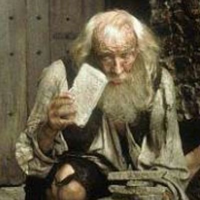
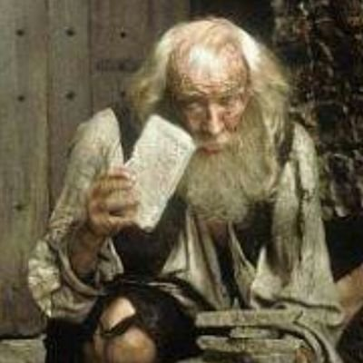

Abbé Faria
An Italian priest. He was once the secretary and good friend of Cardinal Spada, a roman prince. After Spada's death, Faria became the sole heir of the Spada's family fortune.
He was imprisoned in the Château d'If in 1811 where he became good friends with Edmond Dantès. During their stay, he educated Edmond on the subjects of language, culture, mathematics, chemistry, medicine, and science. He informed Edmond of the Spada treasure hidden on the Isle of Monte Cristo. Knowing that he would die from a cerebral apoplexy attack, he bequeathed the treasure to Edmond. He died in prison.
 
